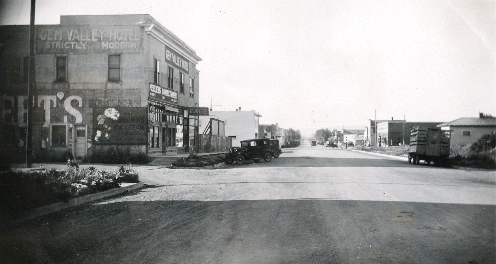
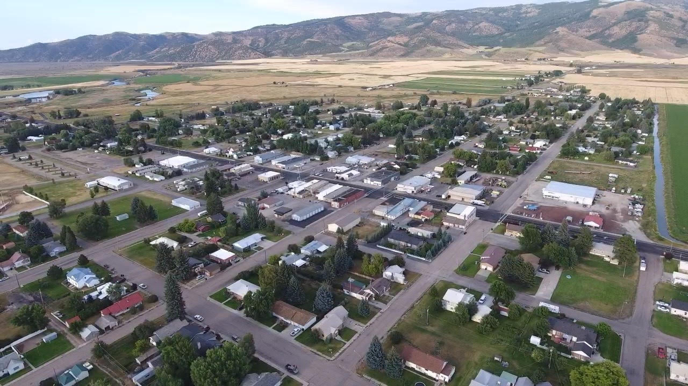
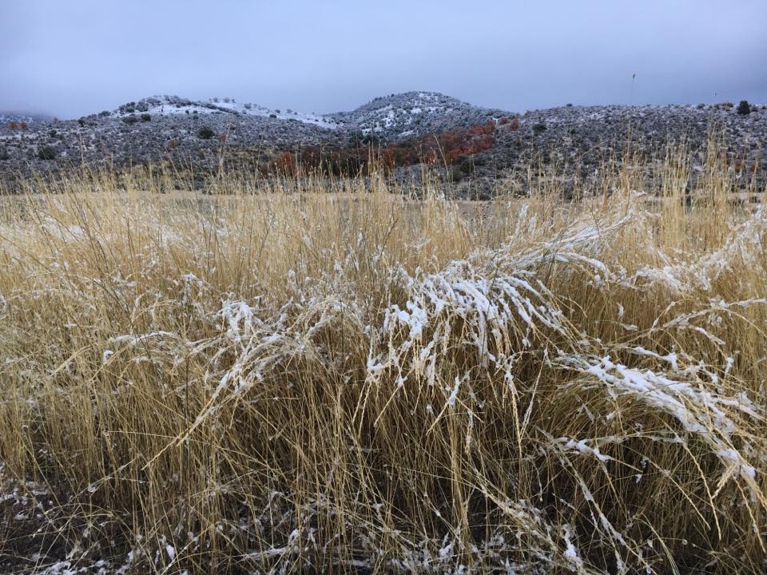
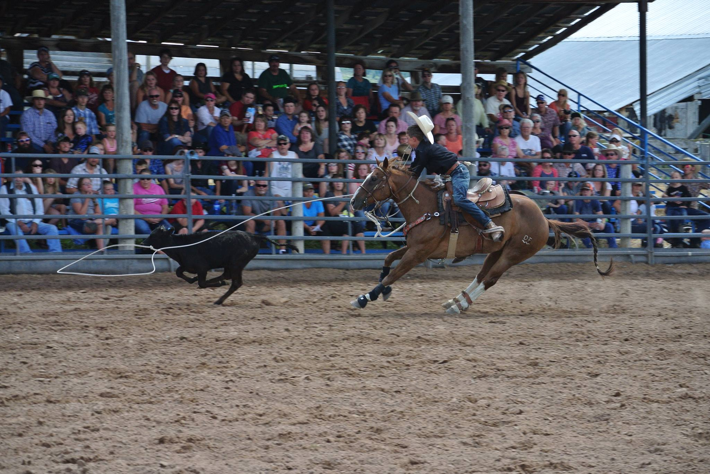
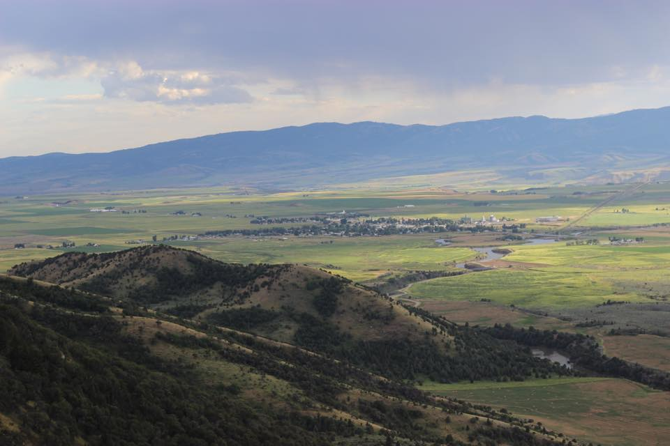
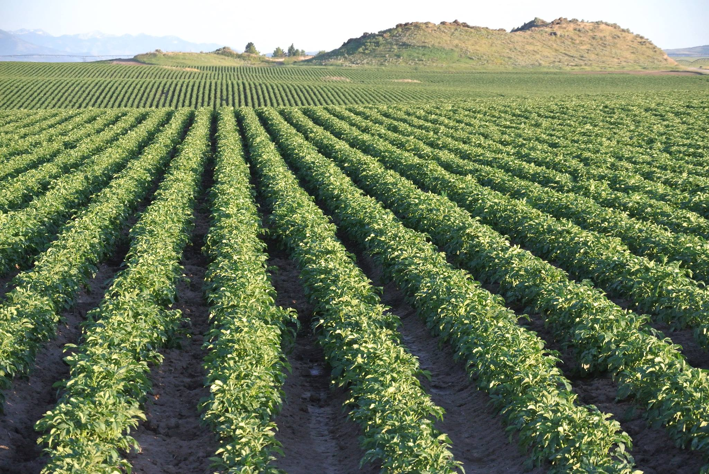
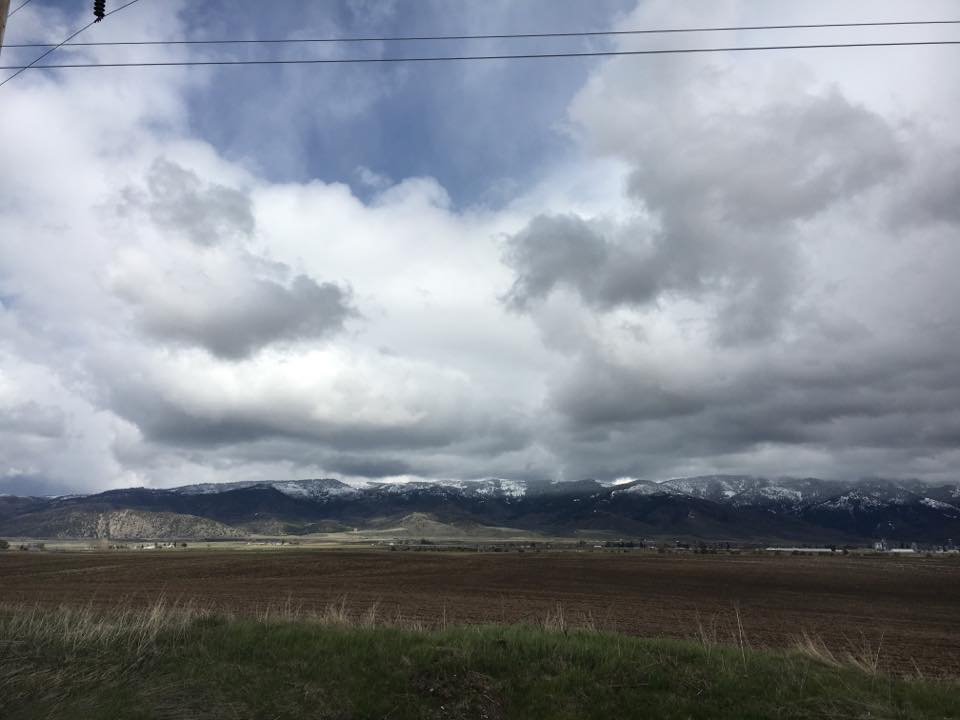
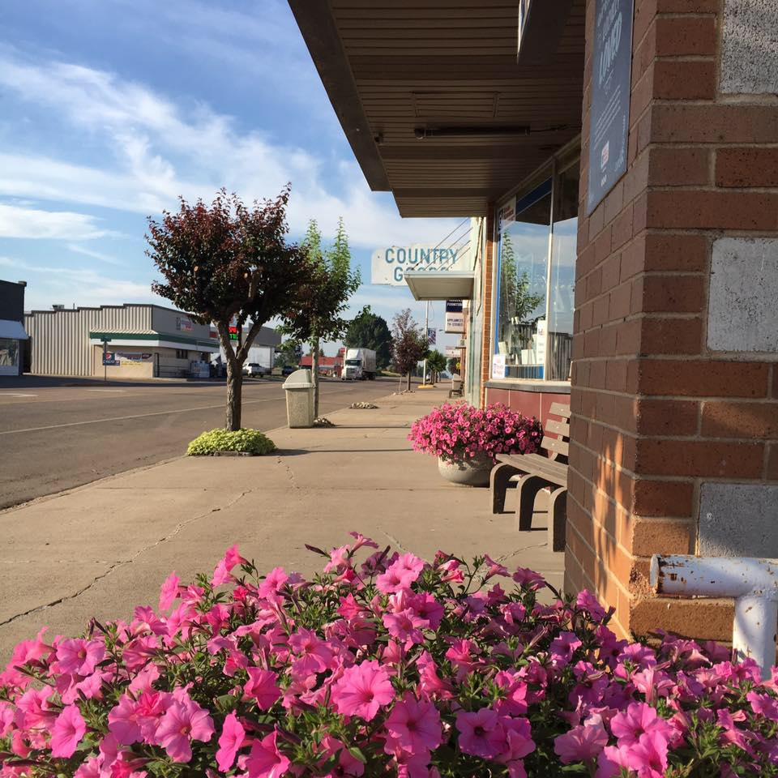
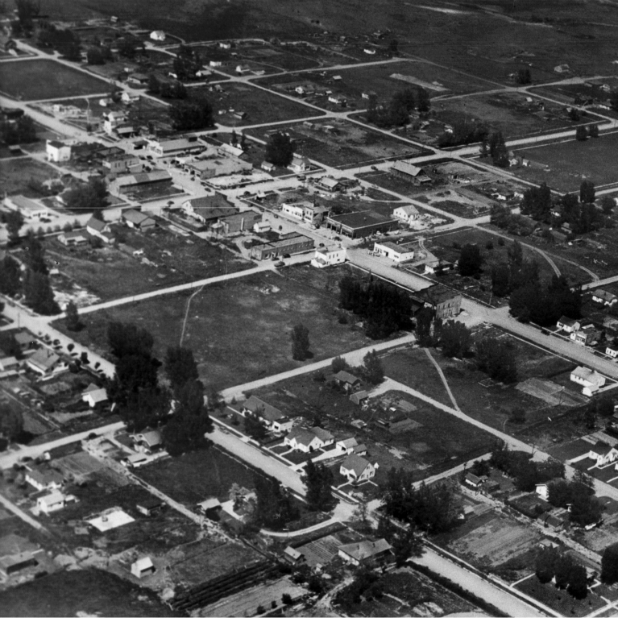
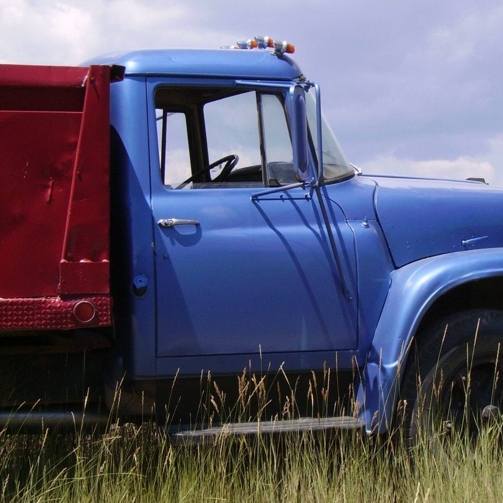

City Of Grace
Mission Statement
As the elected representatives of the City of Grace, the City Council understands that the purpose of the City is to fairly and equitably represent the interests of the citizens of Grace, and to carry out its lawful duties on behalf of the citizens of Grace.
City Council meetings are held the first and third Wednesdays of each month at 6:00 p.m. at City Hall, 108 East Center St. Any meeting date changes or cancellations will be posted.
Mayor: Jackie Barthlome • City Clerk: Shelley Reeves • City Superintendent: Riley Crookston
Annual Events
• July: Caribou County Fair & Rodeo @ Grace Fairgrounds (held the last week of July each year)
• August: Concert in the Park @ Grace City Park
• November: Shop On Main Street, promoting local spending @ Grace Main Street & Caribou fairgrounds
• December: Santa & Mrs. Clause Coming to Town @ the Grace City Fire Department
Grace As We Know It
The city of Grace is located in Southeastern Idaho approximately 30 minutes North of Preston, Idaho, and 15 minutes South of Soda Springs, Idaho.
Grace has a population of 1,000 people as well as many families in the surrounding areas of Niter, and Thatcher. Life is slow, and the small town
feel is very much alive. Employment opportunities are plentiful in the farming and mining industries, but other areas are growing as well. We love
the many small businesses in our little town.
Grace houses Black Canyon Elementary School, Grace Junior High and High School in Grace School District. We have always had fantastic academic peformance
from our students.
Many tourists love to visit Grace in the fall for the fantastic Grace potatoes and produce, as well as visit the Niter Ice Caves, Black Canyon- a nationally renowned white water area,
Oregon Trail and it's pioneer burial sites, public golf courses, hunting, fishing as well as Last Chance Dam.
Grace is fortunate to have volunteer City and County fire protection and ambulance with trained E.M.T's. We have a dentist, medical doctor, physician's assistant,
and many other health providers. Located within 12 miles of the Caribou Memorial Hospital.
The History of Grace
"Before the white man came to what is now known as Gem Valley, several tribes of Indians roamed at will through this section of the country. Also, from 1805 to 1860, thousands of people made the trek through our valley. They were the fur trappers, explorers, freighters, missionaries and immigrants looking for a new and better life in Oregon or the gold fields of California; but, of the thousands who passed through, not one thought of stopping to make a home in this rugged, untamed wilderness. This was soon to change.
The Homestead Act was passed by Congress in 1862. This law helped immensely to open up this vast western country for settlement. And thus, in the early 1860's they came---the hungry homesteaders---and stopped; not to find riches and wealth, but land upon which to build a home and secure a livelihood. They found our valley, and with great strength, unbelievable courage, perseverance and faith unwavering, they made their dream come true. But it was not an easy task.
The first homesteads were taken up along the mountain streams and lush meadowland of the river bottoms, but as more people came in, they pushed gradually northward. Here, in the northern end of the valley, Bear River runs through a deep and rocky gorge, and the land for miles around was arid but fertile. Many heart breaking attempts were made to get water out of the river and on to the land. The very interesting story of how this was finally achieved--by digging a snow ditch--running water through it to freeze and then running the water from the river through the frozen ice-ditch, is told in the book "Gems of our Valley". Had it not succeeded, claims filed upon the water would have been lost.
Settlements in the valley became numerous, each having its own school and church. Mound Valley was the first. Succeeding communities were; Cleveland, Thatcher, Lago, Bench, Niter, Grace, Turner and Central, each having a very interesting history of its own.
Grace, which became the center of commerce and trade in the valley, was settled in 1889 by a little colony of people from West Jordan, Utah. In 1894, Sam Egbert and D. D. Sullivan circulated a petition to obtain a post office. The Federal Government granted their petition and the first post office was located in the Sullivan home, just north of the river bridge. To have a post office, it was necessary to have a name and "Grace" was chosen at the suggestion of Attorney Frank Bean of the land office in Blackfoot, whose wife's name was Grace.
With the water finally out onto the land, it wasn't long before large alfalfa fields dotted the countryside. Shade and fruit trees were planted. More people began to raise livestock, and all in all, 1904 was the beginning of prosperity in Gem Valley. The Telluride Power Co. came to Grace in 1906 to construct a dam and power plant on Bear River and many new jobs were created. Businesses began to move to Grace and by 1916 there were in the Village of Grace the following: 4 hotels, 2 cafes, 4 clothing stores, 2 furniture stores, 2 pool halls, 2 drug stores, 1 confectionery, 4 grocery stores, 2 grain elevators, 1 flour mill, a printing office, a real estate office, 2 theaters and dance halls, 3 lumber yards, a bank, a telephone office and 2 livery stables.
To this day, Grace continues to be a thriving and prosperous City, hundreds of thousands of bushels of grain are produced each year; the seed potatoes grown here are unsurpassed; thousands of dollars worth of cattle and sheep are trucked out each year. Our dairy industry has received national recognition. New industry that has located in Grace include the Heritage Safe Co. that has built a new plant in our Industrial Park. Another company, Bio-Tech, a major supplier of fertilizer, also has their manufacturing facility in the industrial park. Yes, Gem Valley has become a true "Gem" of Idaho. A more detailed history of Gem Valley and its early settlers can be found in the book, "Gems" of our Valley. By Vivian Simmons"
-
 -
 -
 -
 -
 -
 -
 -
 -
 -
